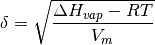
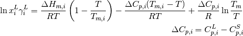
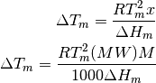

solubility¶
Chemical Engineering Design Library (ChEDL). Utilities for process modeling. Copyright (C) 2016, Caleb Bell <Caleb.Andrew.Bell@gmail.com>
Permission is hereby granted, free of charge, to any person obtaining a copy of this software and associated documentation files (the “Software”), to deal in the Software without restriction, including without limitation the rights to use, copy, modify, merge, publish, distribute, sublicense, and/or sell copies of the Software, and to permit persons to whom the Software is furnished to do so, subject to the following conditions:
The above copyright notice and this permission notice shall be included in all copies or substantial portions of the Software.
THE SOFTWARE IS PROVIDED “AS IS”, WITHOUT WARRANTY OF ANY KIND, EXPRESS OR IMPLIED, INCLUDING BUT NOT LIMITED TO THE WARRANTIES OF MERCHANTABILITY, FITNESS FOR A PARTICULAR PURPOSE AND NONINFRINGEMENT. IN NO EVENT SHALL THE AUTHORS OR COPYRIGHT HOLDERS BE LIABLE FOR ANY CLAIM, DAMAGES OR OTHER LIABILITY, WHETHER IN AN ACTION OF CONTRACT, TORT OR OTHERWISE, ARISING FROM, OUT OF OR IN CONNECTION WITH THE SOFTWARE OR THE USE OR OTHER DEALINGS IN THE SOFTWARE.
-
thermosteam.functors.solubility.solubility_parameter(T=298.15, Hvapm=None, Vml=None, CASRN='', AvailableMethods=False, Method=None)[source]¶ This function handles the calculation of a chemical’s solubility parameter. Calculation is a function of temperature, but is not always presented as such. No lookup values are available; either Hvapm, Vml, and T are provided or the calculation cannot be performed.

- Parameters
- Tfloat
Temperature of the fluid [k]
- Hvapmfloat
Heat of vaporization [J/mol/K]
- Vmlfloat
Specific volume of the liquid [m^3/mol]
- CASRNstr, optional
CASRN of the fluid, not currently used [-]
- Returns
- deltafloat
Solubility parameter, [Pa^0.5]
- methodslist, only returned if AvailableMethods == True
List of methods which can be used to obtain the solubility parameter with the given inputs
- Other Parameters
- Methodstring, optional
A string for the method name to use, as defined by constants in solubility_parameter_methods
- AvailableMethodsbool, optional
If True, function will determine which methods can be used to obtain the solubility parameter for the desired chemical, and will return methods instead of the solubility parameter
Notes
Undefined past the critical point. For convenience, if Hvap is not defined, an error is not raised; None is returned instead. Also for convenience, if Hvapm is less than RT, None is returned to avoid taking the root of a negative number.
This parameter is often given in units of cal/ml, which is 2045.48 times smaller than the value returned here.
References
- 1
Barton, Allan F. M. CRC Handbook of Solubility Parameters and Other Cohesion Parameters, Second Edition. CRC Press, 1991.
Examples
Pentane at STP
>>> solubility_parameter(T=298.2, Hvapm=26403.3, Vml=0.000116055) 14357.681538173534
-
thermosteam.functors.solubility.solubility_eutectic(T, Tm, Hm, Cpl=0, Cps=0, gamma=1)[source]¶ Returns the maximum solubility of a solute in a solvent.

- Parameters
- Tfloat
Temperature of the system [K]
- Tmfloat
Melting temperature of the solute [K]
- Hmfloat
Heat of melting at the melting temperature of the solute [J/mol]
- Cplfloat, optional
Molar heat capacity of the solute as a liquid [J/mol/K]
- Cpls: float, optional
Molar heat capacity of the solute as a solid [J/mol/K]
- gammafloat, optional
Activity coefficient of the solute as a liquid [-]
- Returns
- xfloat
Mole fraction of solute at maximum solubility [-]
Notes
gamma is of the solute in liquid phase
References
- 1
Gmehling, Jurgen. Chemical Thermodynamics: For Process Simulation. Weinheim, Germany: Wiley-VCH, 2012.
Examples
From [1], matching example
>>> solubility_eutectic(T=260., Tm=278.68, Hm=9952., Cpl=0, Cps=0, gamma=3.0176) 0.24340068761677464
-
thermosteam.functors.solubility.Tm_depression_eutectic(Tm, Hm, x=None, M=None, MW=None)[source]¶ Returns the freezing point depression caused by a solute in a solvent. Can use either the mole fraction of the solute or its molality and the molecular weight of the solvent. Assumes ideal system behavior.

- Parameters
- Tmfloat
Melting temperature of the solute [K]
- Hmfloat
Heat of melting at the melting temperature of the solute [J/mol]
- xfloat, optional
Mole fraction of the solute [-]
- Mfloat, optional
Molality [mol/kg]
- MW: float, optional
Molecular weight of the solvent [g/mol]
- Returns
- dTmfloat
Freezing point depression [K]
Notes
MW is the molecular weight of the solvent. M is the molality of the solute.
References
- 1
Gmehling, Jurgen. Chemical Thermodynamics: For Process Simulation. Weinheim, Germany: Wiley-VCH, 2012.
Examples
From [1], matching example.
>>> Tm_depression_eutectic(353.35, 19110, .02) 1.0864594900639515